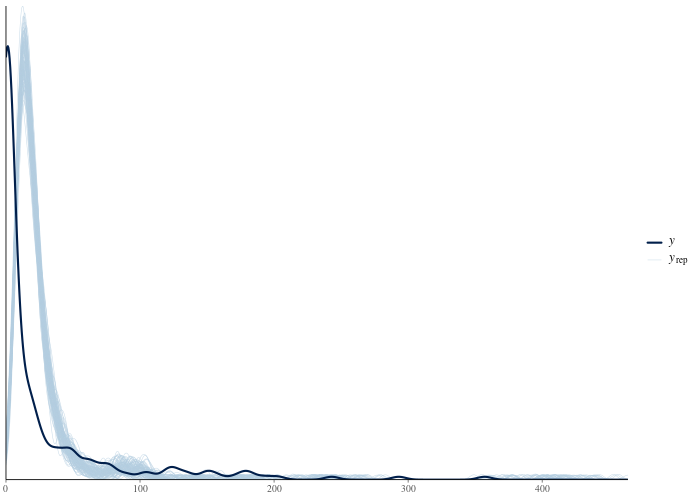
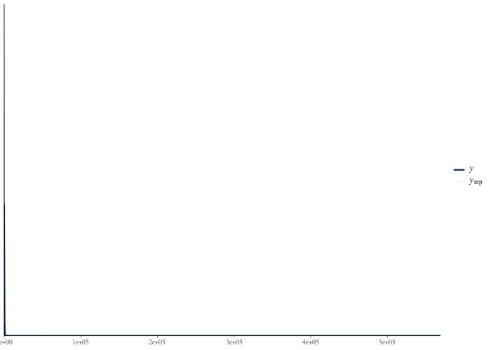

Case study: pest control and overdispersed counts
Source:vignettes/case-study-roaches.Rmd
case-study-roaches.RmdThe data come from a randomized trial of integrated pest management
in urban apartments (Gelman and Hill, 2007). For each of 262 apartments
we have the number of roaches caught in traps after the intervention
(y), the pre-treatment roach level (roach1),
whether the apartment received the treatment (treatment),
whether the building is restricted to elderly residents
(senior), and the number of trap-days
(exposure2). We want to estimate whether the treatment
reduces roach counts, and by how much.
The chunks use eval = FALSE with output pasted from a
real run, so the vignette builds without CmdStan on CI. The dataset and
three Stan programs ship with the package.
Setup
library(bayesgrove)
handle <- bg_init(
path = file.path(tempdir(), "bg-roaches"),
project_name = "Roaches"
)
bg_use_workflow_packs(handle, "bayesgrove.default_bayesian")
bg_use_cmdstanr(handle)
roaches <- read.csv(
system.file("extdata", "roaches.csv", package = "bayesgrove")
)
# Rescale the pre-treatment count so its coefficient is comparable in
# magnitude to the other predictors.
roaches$roach1s <- roaches$roach1 / 100
nrow(roaches)
mean(roaches$y == 0)
max(roaches$y)[1] 262
[1] 0.3587786
[1] 357More than a third of the apartments caught zero roaches, and the largest count is in the hundreds. The models need to account for both features.
Fit a Poisson model
The default first model for counts is Poisson regression with a log link and the trap-days as an exposure offset. The package ships the program, so the code runs as pasted:
stan_data <- list(
N = nrow(roaches),
y = roaches$y,
roach1s = roaches$roach1s,
treatment = roaches$treatment,
senior = roaches$senior,
exposure2 = roaches$exposure2
)
n_pois <- bg_fit_stan(
handle,
stan_file = system.file(
"stan/roaches_poisson.stan",
package = "bayesgrove",
mustWork = TRUE
),
data = stan_data,
label = "Poisson",
seed = 707,
chains = 4
)Starting run "run_473d5bba" with 1 node to execute.
Running node "node_9c4bbb1f"...
Running node "node_6005a4f4"...
Running MCMC with 4 sequential chains...
All 4 chains finished successfully.
Mean chain execution time: 0.3 seconds.
Total execution time: 1.7 seconds.
<bg_run_handle> run_473d5bba
• Status: succeeded
• Executed Nodes: 2The fit has no divergences, and its R-hat and E-BFMI values raise no warnings. The workflow pack requests no review of these sampler diagnostics:
bg_next_actions(handle)$obligationsnamed list()These diagnostics assess the sampler. Predictive checks assess whether the model reproduces the data.
Check the Poisson predictions
A ppc node computes posterior-predictive p-values for
chosen test statistics. For count data, prop_zero (the
proportion of zeros) and the dispersion-sensitive sd and
max check the features noted above:
graph <- bg_read_graph(handle)
n_data <- Filter(
function(edge) identical(edge$to, n_pois),
graph$edges
)[[1]]$from
n_ppc_pois <- bg_add_node(
handle,
kind = "ppc",
label = "PPC: Poisson",
inputs = c(n_pois, n_data),
params = list(stats = c("mean", "sd", "prop_zero", "max"))
)
bg_run(handle, targets = n_ppc_pois)
ppc_pois <- Filter(
function(s) identical(s$summary_kind, "posterior_predictive_check"),
bg_read_summaries(handle, include_stale = FALSE)
)[[1]]
ppc_pois$severity
ppc_pois$metricsStarting run "run_c7bb938d" with 1 node to execute.
Running node "node_82a6fcc2"...
<bg_run_handle> run_c7bb938d
• Status: succeeded
• Executed Nodes: 1
[1] "warning"
$max
[1] 0.9858
$mean
[1] 0.5025
$prop_zero
[1] 0
$sd
[1] 0The p-values for sd and prop_zero are
numerically zero. None of the four thousand posterior-predictive draws
has as much dispersion or as many zeros as the observed data. The
observed zero rate is 36 percent. The large counts raise the fitted
Poisson means, which leaves too few predicted zeros. A Poisson
distribution has equal mean and variance; these counts have much greater
variance.
Posterior-predictive p-values are conservative and are not calibrated tests. Extreme values indicate a mismatch, but unremarkable values provide weak evidence of model adequacy. Inspect the predictive plot as the primary check:
bg_plot(handle, n_ppc_pois)
The observed density (dark) has a spike at zero and a long right tail. The Poisson replicates (light) concentrate their mass in a narrow band and have neither feature.
Review the Poisson model
The failed check produces a warning-severity summary. The default pack blocks downstream computation until a decision records a review of that evidence:
guide <- bg_next_actions(handle)
vapply(guide$obligations, `[[`, character(1), "kind")
vapply(guide$actions, `[[`, character(1), "kind") obl_19245764
"review_computation_validity"
act_5d3f5ca0 act_fba204ff
"record_decision" "branch_and_modify" The suggested actions are to record a review decision and to modify the fit on a branch. First, record why the Poisson model is rejected so later readers can follow the choice:
review <- Filter(
function(a) identical(a$kind, "record_decision"),
guide$actions
)[[1]]
bg_record_decision(
handle,
scope = "project",
prompt = "Does the Poisson model reproduce the roach counts?",
choice = "reject_poisson",
rationale = paste(
"The posterior predictive distribution cannot produce the observed",
"dispersion (sd p-value 0) or the 36% zero rate (prop_zero p-value 0).",
"The equidispersion assumption is untenable; move to a negative",
"binomial count component."
),
kind = review$payload$decision_type,
metadata = review$payload[c("node_ids", "summary_ids")]
)Fit a negative binomial model
Create a branch for the negative binomial model. This retains the
Poisson fit and its failed check and records the reason for the new
model. bg_update_node() merges params, so only the Stan
program changes; data, chains, and seed carry over.
nb <- bg_branch(handle, n_pois, label = "Negative binomial")
bg_set_goal(
project = handle,
branch_id = nb$branch_id,
kind = "observable_prediction",
label = "Treatment effect under overdispersion",
rationale = paste(
"The rejected Poisson fit motivates a count model with a",
"free dispersion parameter."
)
)
bg_update_node(
handle,
nb$root_node_id,
params = list(
stan_file = system.file(
"stan/roaches_negbinomial.stan",
package = "bayesgrove",
mustWork = TRUE
)
)
)
bg_run(handle, targets = nb$root_node_id)<bg_decision_record> dec_975400ae
• Prompt: Set inferential goal
• Choice: Treatment effect under overdispersion
• Rationale: The rejected Poisson fit motivates a count model with a free
dispersion parameter.
[1] "node_361db0e2"
Starting run "run_3df77c4d" with 1 node to execute.
Running node "node_361db0e2"...
Running MCMC with 4 sequential chains...
All 4 chains finished successfully.
Mean chain execution time: 0.7 seconds.
Total execution time: 2.8 seconds.
<bg_run_handle> run_3df77c4d
• Status: succeeded
• Executed Nodes: 1
n_ppc_nb <- bg_add_node(
handle,
kind = "ppc",
label = "PPC: negative binomial",
inputs = c(nb$root_node_id, n_data),
params = list(stats = c("mean", "sd", "prop_zero", "max"))
)
bg_run(handle, targets = n_ppc_nb)
ppc_nb <- Filter(
function(s) {
identical(s$summary_kind, "posterior_predictive_check") &&
identical(s$node_id, n_ppc_nb)
},
bg_read_summaries(handle, include_stale = FALSE)
)[[1]]
ppc_nb$severity
ppc_nb$metricsStarting run "run_5e040ae6" with 1 node to execute.
Running node "node_67a0185c"...
<bg_run_handle> run_5e040ae6
• Status: succeeded
• Executed Nodes: 1
[1] "warning"
$max
[1] 0.994
$mean
[1] 0.9082
$prop_zero
[1] 0.3132
$sd
[1] 0.9835The negative binomial reproduces the zero rate
(prop_zero p-value around 0.3), but overpredicts the
maximum. With the fitted dispersion (phi around 0.27), almost every
replicate contains a count larger than the observed maximum of 357.
bg_plot(handle, n_ppc_nb)
Decide whether the overpredicted maximum invalidates the model for estimating the average treatment effect. That estimate depends mainly on the bulk of the count distribution, rather than whether the largest count is 357 or 3000. Record the decision to retain the model and the reason for accepting this mismatch:
nb_guide <- bg_next_actions(
handle,
scope = "branch",
branch_id = nb$branch_id
)
review_nb <- Filter(
function(a) identical(a$kind, "record_decision"),
nb_guide$actions
)[[1]]
bg_record_decision(
handle,
scope = nb$branch_id,
prompt = "Does the negative binomial model reproduce the roach counts?",
choice = "accept_with_heavy_tail_caveat",
rationale = paste(
"Dispersion and zero rate are reproduced (prop_zero p = 0.31). The max",
"statistic is extreme (p = 0.99): the NB tail overshoots the observed",
"maximum. The estimand is the average treatment effect, which is not",
"tail-driven, so the fit is retained; a zero-inflated variant will be",
"fit as a competing candidate."
),
kind = review_nb$payload$decision_type,
metadata = review_nb$payload[c("node_ids", "summary_ids")]
)Fit a zero-inflated negative binomial model
The negative binomial explains the zeros as ordinary low-count outcomes. A different mechanism is plausible: some apartments may have no roach infestation at all, producing structural zeros regardless of exposure. A zero-inflated negative binomial models that possibility. Create a second branch from the Poisson fit so it can be compared with the negative binomial branch:
zinb <- bg_branch(handle, n_pois, label = "Zero-inflated NB")
bg_set_goal(
project = handle,
branch_id = zinb$branch_id,
kind = "observable_prediction",
label = "Treatment effect with structural zeros",
rationale = "Competing hypothesis: a no-infestation mixture component."
)
bg_update_node(
handle,
zinb$root_node_id,
params = list(
stan_file = system.file(
"stan/roaches_zinb.stan",
package = "bayesgrove",
mustWork = TRUE
)
)
)
bg_run(handle, targets = zinb$root_node_id)
n_ppc_zinb <- bg_add_node(
handle,
kind = "ppc",
label = "PPC: zero-inflated NB",
inputs = c(zinb$root_node_id, n_data),
params = list(stats = c("mean", "sd", "prop_zero", "max"))
)
bg_run(handle, targets = n_ppc_zinb)
ppc_zinb <- Filter(
function(s) {
identical(s$summary_kind, "posterior_predictive_check") &&
identical(s$node_id, n_ppc_zinb)
},
bg_read_summaries(handle, include_stale = FALSE)
)[[1]]
ppc_zinb$severity
ppc_zinb$metrics<bg_decision_record> dec_463d2e97
• Prompt: Set inferential goal
• Choice: Treatment effect with structural zeros
• Rationale: Competing hypothesis: a no-infestation mixture component.
[1] "node_bc1a368c"
Starting run "run_350f796c" with 1 node to execute.
Running node "node_bc1a368c"...
Running MCMC with 4 sequential chains...
All 4 chains finished successfully.
Mean chain execution time: 1.4 seconds.
Total execution time: 6.1 seconds.
<bg_run_handle> run_350f796c
• Status: succeeded
• Executed Nodes: 1
Starting run "run_8b49968c" with 1 node to execute.
Running node "node_0a3fdf77"...
<bg_run_handle> run_8b49968c
• Status: succeeded
• Executed Nodes: 1
[1] "warning"
$max
[1] 0.9818
$mean
[1] 0.8422
$prop_zero
[1] 0.4145
$sd
[1] 0.9572The zero-inflated model also reproduces the zero rate and overpredicts large counts. The structural-zero probability averages about 7 percent, suggesting that the added component may contribute little. Record the branch’s review using the same rationale as for the negative binomial:
zinb_guide <- bg_next_actions(
handle,
scope = "branch",
branch_id = zinb$branch_id
)
review_zinb <- Filter(
function(a) identical(a$kind, "record_decision"),
zinb_guide$actions
)[[1]]
bg_record_decision(
handle,
scope = zinb$branch_id,
prompt = "Does the zero-inflated NB model reproduce the roach counts?",
choice = "accept_with_heavy_tail_caveat",
rationale = paste(
"Same predictive profile as the plain NB: zeros and dispersion",
"reproduced, max statistic marginally extreme. Retained as a",
"comparison candidate."
),
kind = review_zinb$payload$decision_type,
metadata = review_zinb$payload[c("node_ids", "summary_ids")]
)Compare the models
All fits now have reviewed evidence. The default pack requires a comparison at project scope, including the Poisson model rejected during review. Review decisions do not remove candidates from the graph. The comparison quantifies their differences; subsequent branch dispositions record which candidates to accept or reject.
project_guide <- bg_next_actions(handle, scope = "project")
vapply(project_guide$obligations, `[[`, character(1), "kind") obl_d68109ce
"compare_candidate_branches" Use PSIS-LOO (Vehtari, Gelman, and Gabry, 2017). A loo
node for each candidate computes the leave-one-out estimate from its
log-likelihood draws and emits a Pareto-k diagnostic summary. A
compare node uses all three results:
n_loo_pois <- bg_add_node(
handle,
kind = "loo",
label = "LOO: Poisson",
inputs = n_pois
)
n_loo_nb <- bg_add_node(
handle,
kind = "loo",
label = "LOO: negative binomial",
inputs = nb$root_node_id
)
n_loo_zinb <- bg_add_node(
handle,
kind = "loo",
label = "LOO: zero-inflated NB",
inputs = zinb$root_node_id
)
n_compare <- bg_add_node(
handle,
kind = "compare",
label = "Poisson vs NB vs ZINB",
inputs = c(n_loo_pois, n_loo_nb, n_loo_zinb)
)
bg_run(handle, targets = n_compare)
print(bg_result(handle, n_compare))Starting run "run_2f70c8ad" with 3 nodes to execute.
Running node "node_daa4f4b9"...
Running node "node_f41a3306"...
Running node "node_4c2b165d"...
Replacing NAs in `r_eff` with 1s
Running node "node_cd6c137c"...
<bg_run_handle> run_2f70c8ad
• Status: succeeded
• Executed Nodes: 4
$comparison_table
$comparison_table$model
[1] "node_f41a3306" "node_4c2b165d" "node_daa4f4b9"
$comparison_table$elpd_diff
[1] 0.0000000 -0.5972503 -5350.1325212
$comparison_table$se_diff
[1] 0.0000000 0.8328894 708.9827766The table orders models by elpd, highest first. The negative binomial is slightly ahead of its zero-inflated extension, with a difference of less than one standard error. The Poisson is more than five thousand elpd units below both. These results show little difference between the two negative binomial models and a large difference between either one and the Poisson.
Review LOO diagnostics
The Poisson’s LOO importance sampling is unreliable, with many high Pareto-k values consistent with its poor fit. The ZINB has one borderline observation. These warnings block progress until a review records whether the comparison evidence is reliable enough to use:
project_guide <- bg_next_actions(handle, scope = "project")
loo_review <- Filter(
function(a) {
identical(a$kind, "record_decision") &&
!identical(a$payload$decision_type, "model_comparison")
},
project_guide$actions
)[[1]]
bg_record_decision(
handle,
scope = "project",
prompt = "Are the PSIS-LOO estimates reliable enough to compare on?",
choice = "accept_loo_evidence",
rationale = paste(
"The Poisson's high Pareto-k values are the expected signature of",
"gross misspecification; no plausible correction moves it thousands",
"of elpd units. The single borderline k in the ZINB cannot overturn",
"a sub-SE difference against the NB. The comparison verdict does not",
"depend on PSIS precision here."
),
kind = loo_review$payload$decision_type,
metadata = loo_review$payload[c("node_ids", "summary_ids")]
)Decisions are scope-specific, and the loo evidence for the branch fits lives on those branches: the project-scope decision above does not cover them. Record the judgment separately on each branch so it applies to that branch’s evidence:
for (b in list(nb, zinb)) {
b_guide <- bg_next_actions(handle, scope = "branch", branch_id = b$branch_id)
b_reviews <- Filter(
function(a) {
identical(a$kind, "record_decision") &&
!identical(a$payload$decision_type, "branch_disposition")
},
b_guide$actions
)
for (b_review in b_reviews) {
bg_record_decision(
handle,
scope = b$branch_id,
prompt = "Are the PSIS-LOO estimates reliable enough to compare on?",
choice = "accept_loo_evidence",
rationale = paste(
"Same judgment as the project-scope review: the Pareto-k pattern",
"cannot overturn either the gulf to the Poisson or the sub-SE",
"tie between the count models."
),
kind = b_review$payload$decision_type,
metadata = b_review$payload[c("node_ids", "summary_ids")]
)
}
}The zero-inflation component adds a parameter without a clear predictive improvement. The negative binomial already reproduces the zero rate, so the comparison decision prefers that simpler model:
project_guide <- bg_next_actions(handle, scope = "project")
comparison_action <- Filter(
function(a) {
identical(a$kind, "record_decision") &&
identical(a$payload$decision_type, "model_comparison")
},
project_guide$actions
)[[1]]
bg_record_decision(
handle,
scope = "project",
prompt = "Which candidate model should carry the treatment inference?",
choice = "prefer_negative_binomial",
rationale = paste(
"LOO cannot distinguish the candidates (elpd difference well within",
"one SE). The ZINB's structural-zero probability is small (~7%) and",
"its extra machinery buys no predictive improvement. Prefer the",
"simpler negative binomial."
),
kind = "model_comparison",
metadata = comparison_action$payload[c(
"fit_node_ids",
"summary_ids",
"candidate_signature",
"comparison_signature",
"comparison_context"
)]
)After recording the comparison, accept or reject each branch with a rationale:
for (b in list(
list(branch = nb, disposition = "accept", why = paste(
"Preferred by the comparison decision: equivalent predictive",
"performance with fewer moving parts."
)),
list(branch = zinb, disposition = "reject", why = paste(
"No predictive gain over the plain NB and a near-zero mixture",
"weight; rejected in favor of the simpler candidate."
))
)) {
b_guide <- bg_next_actions(
handle,
scope = "branch",
branch_id = b$branch$branch_id
)
d_action <- Filter(
function(a) {
identical(a$kind, "record_decision") &&
identical(a$payload$decision_type, "branch_disposition")
},
b_guide$actions
)[[1]]
bg_record_decision(
handle,
scope = b$branch$branch_id,
prompt = "Accept or reject this branch?",
choice = b$disposition,
rationale = b$why,
kind = "branch_disposition",
metadata = list(
disposition = b$disposition,
summary_ids = d_action$payload$summary_ids,
comparison_signature = d_action$payload$comparison_signature,
comparison_context = d_action$payload$comparison_context
)
)
}
bg_next_actions(handle, scope = "project")$obligations
bg_next_actions(handle, scope = "branch", branch_id = nb$branch_id)$obligations
bg_next_actions(handle, scope = "branch", branch_id = zinb$branch_id)$obligationsnamed list()
named list()
named list()There are no outstanding obligations at project or branch scope. The required reviews have been recorded.
Compare treatment-effect estimates
The treatment effect, as a multiplicative factor on the roach count
(posterior median and 90 percent interval of
exp(b_treatment)):
| Model | Effect | 90% interval |
|---|---|---|
| Poisson (rejected at review) | 0.60 | [0.57, 0.62] |
| Negative binomial (accepted) | 0.46 | [0.31, 0.69] |
The Poisson fit estimates a 40 percent reduction. The accepted negative binomial fit estimates a larger reduction, with a wider interval. The failed predictive check raised a blocking obligation, and the decision log records why the Poisson model was rejected.
draws <- bg_result(handle, nb$root_node_id)$draws("b_treatment")
round(quantile(exp(draws), c(0.05, 0.5, 0.95)), 2) 5% 50% 95%
0.31 0.46 0.69 Export the analysis record
The graph contains all three models, their checks, and the comparison. The decision log records the goals, reviews, comparison decision, and branch dispositions:
print(bg_read_graph(handle))
for (d in bg_read_decisions(handle)) {
cat(d$kind, "-", d$choice, "\n")
}
── Execution Graph ──
└── Poisson_data <stan_data> [new]
├── Poisson <cmdstanr_fit> [new]
│ ├── PPC: Poisson <ppc> [new]
│ └── LOO: Poisson <loo> [new]
│ └── Poisson vs NB vs ZINB <compare> [new]
├── [already shown: PPC: Poisson]
├── Negative binomial <cmdstanr_fit> [new]
│ ├── PPC: negative binomial <ppc> [new]
│ └── LOO: negative binomial <loo> [new]
│ └── [already shown: Poisson vs NB vs ZINB]
├── [already shown: PPC: negative binomial]
├── Zero-inflated NB <cmdstanr_fit> [new]
│ ├── PPC: zero-inflated NB <ppc> [new]
│ └── LOO: zero-inflated NB <loo> [new]
│ └── [already shown: Poisson vs NB vs ZINB]
└── [already shown: PPC: zero-inflated NB]
computation_review - reject_poisson
goal_update - Treatment effect under overdispersion
computation_review - accept_with_heavy_tail_caveat
goal_update - Treatment effect with structural zeros
computation_review - accept_with_heavy_tail_caveat
computation_review - accept_loo_evidence
computation_review - accept_loo_evidence
computation_review - accept_loo_evidence
model_comparison - prefer_negative_binomial
branch_disposition - accept
branch_disposition - reject bg_export_report() produces a document with the graph,
decisions and rationales, and artifact index. Diagnostic summaries
remain in the project:
bg_export_report(
handle,
format = "md",
path = file.path(tempdir(), "roaches-report.md")
)An excerpt of the decision trail as it appears in the report:
## Decision Provenance
### Does the Poisson model reproduce the roach counts?
- **Choice:** reject_poisson
- **Rationale:** The posterior predictive distribution cannot produce the observed dispersion (sd p-value 0) or the 36% zero rate (prop_zero p-value 0). The equidispersion assumption is untenable; move to a negative binomial count component.
- **Scope:** project
- **Timestamp:** 2026-07-11T06:36:36Z
### Set inferential goal
- **Choice:** Treatment effect under overdispersion
- **Rationale:** The rejected Poisson fit motivates a count model with a free dispersion parameter.
- **Scope:** branch:39cc17ab
- **Timestamp:** 2026-07-11T06:36:36Z
### Does the negative binomial model reproduce the roach counts?
- **Choice:** accept_with_heavy_tail_caveatFor what to archive alongside a manuscript and what a reviewer can verify from the archive without re-running anything, see the reproducible-research article on the package site.
References
- Gelman, A., and Hill, J. (2007). Data Analysis Using Regression and Multilevel/Hierarchical Models. Cambridge University Press. (The roaches data ship with the package; the copy is taken from the ROS-Examples repository, https://github.com/avehtari/ROS-Examples.)
- Gelman, A., Hill, J., and Vehtari, A. (2020). Regression and Other Stories. Cambridge University Press.
- Vehtari, A., Gelman, A., and Gabry, J. (2017). Practical Bayesian model evaluation using leave-one-out cross-validation and WAIC. Statistics and Computing, 27(5), 1413-1432.